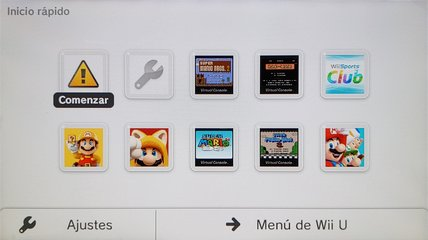
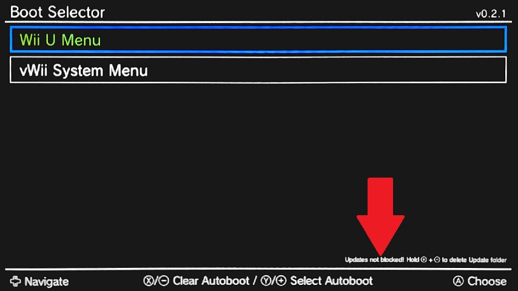

Desbloquear las actualizaciones
Si el proceso de descarga de la actualización del sistema de la Wii U se detiene con un código de error 105-3012, 105-3015 o 105-3029 prueba restaurar la carpeta update del sistema de la consola.
Instrucciones
Asegúrate de tener la versión más actual de Aroma antes de continuar.
- Desactiva las funciones en modo de reposo siguiendo los pasos de este enlace. Si ya tienes desactivadas las funciones en modo de reposo continúa con los pasos de abajo.
- En este punto debes tener la Wii U apagada con la tarjeta SD introducida.
- Enciende la consola y mantén presionado el botón START ⊕︀ del Wii U GamePad hasta que salga el menú Boot Selector.
- Si al encender la consola aparece el menú del Environment Loader selecciona Aroma y presiona el botón A e inmediatamente después mantén presionado el botón START ⊕︀ del Wii U GamePad hasta que salga el menú Boot Selector.
- En el Boot Selector, en la esquina inferior derecha se muestra el texto:
Updates not blocked! Hold ⊕︀ + ⊝ to delete Update foldercuando NO están bloqueadas las actualizaciones.Updates blocked! Hold ⊕︀ + ⊝ to restore Update foldercuando SÍ están bloqueadas las actualizaciones.- Mantén presionados los botones START ⊕︀ y SELECT ⊝ del Wii U GamePad al mismo tiempo hasta que el mensaje de esquina inferior derecha cambie.
- Debe quedar el mensaje
Updates not blocked! Hold ⊕︀ + ⊝ to delete Update folderpara que las actualizaciones queden desbloqueadas. - Recuerda que presionando el botón Y configuras la opción predeterminada del Boot Selector.
- Selecciona Wii U Menu y luego presiona el botón A para abrir el menú de Wii U.
- En el menú de Wii U, apaga la consola.

